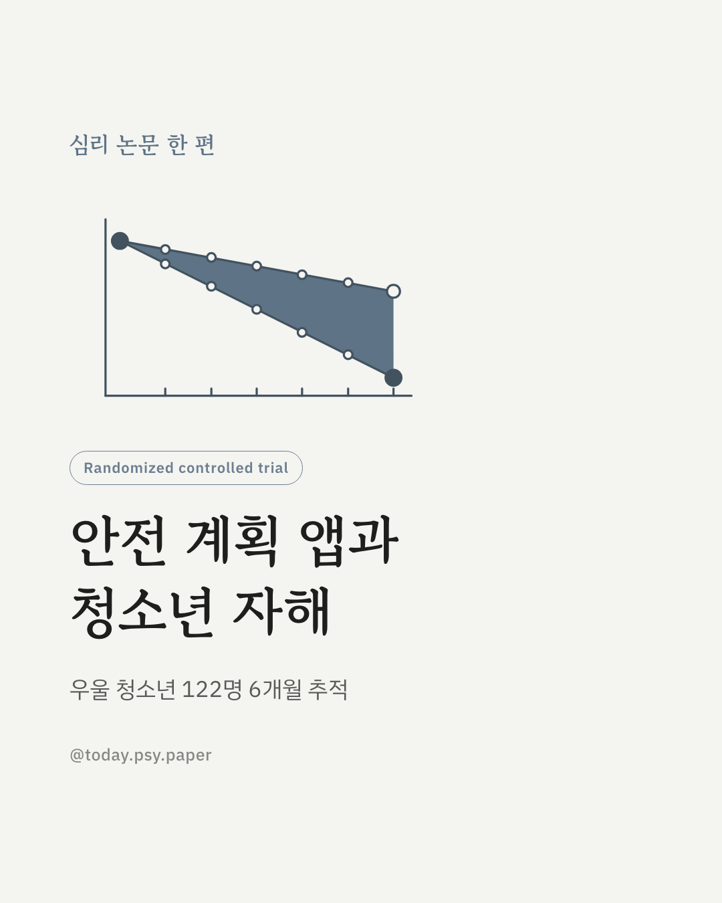
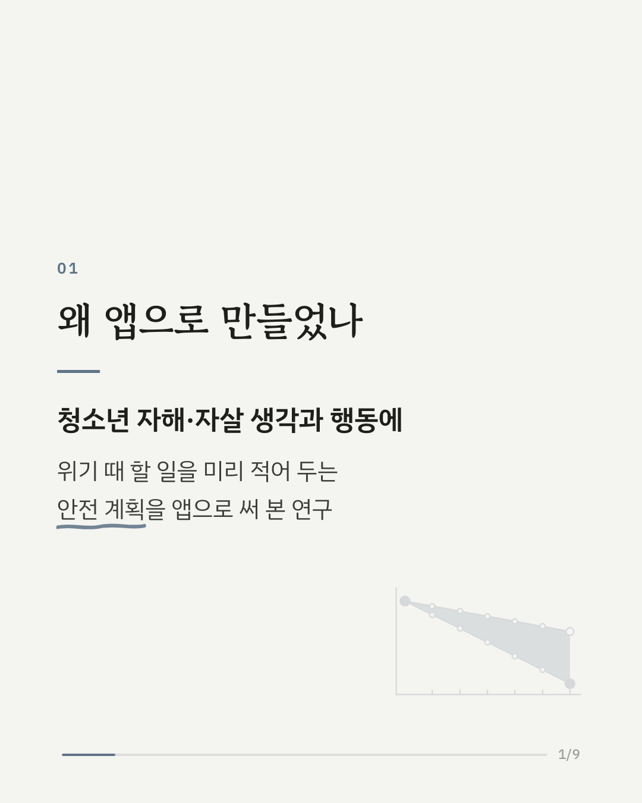
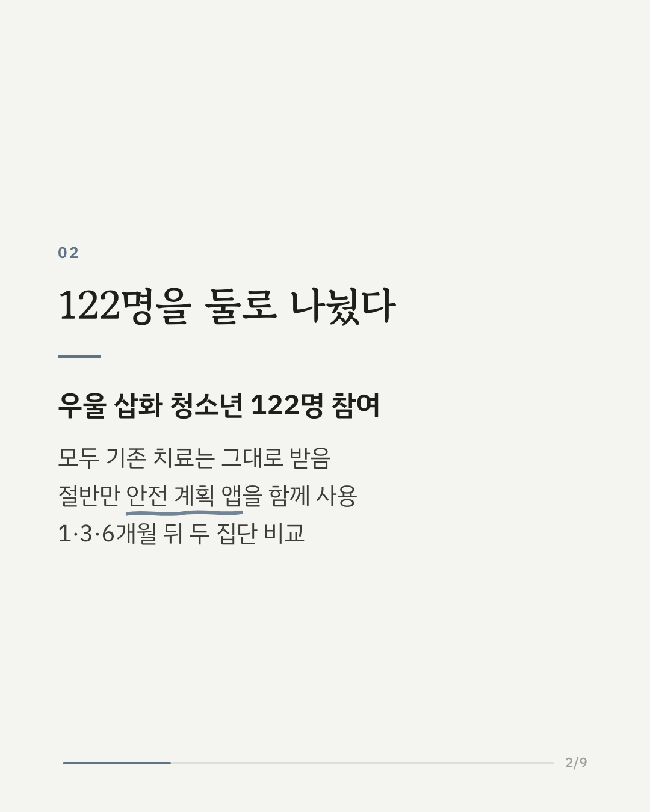
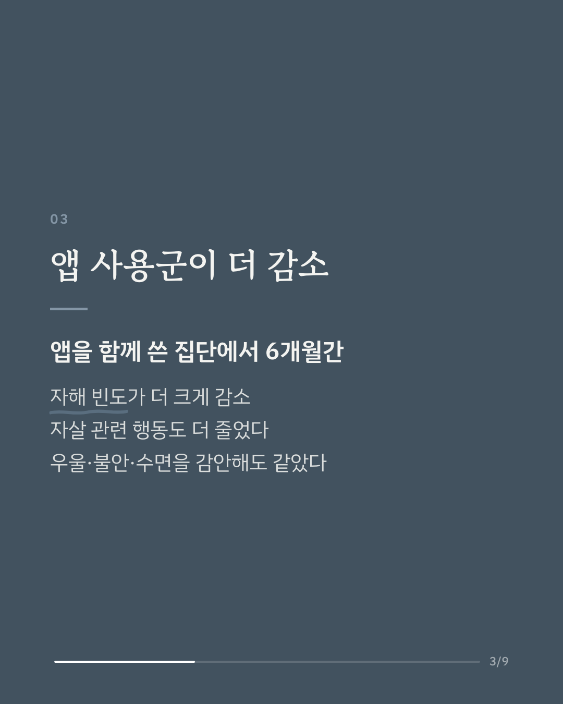
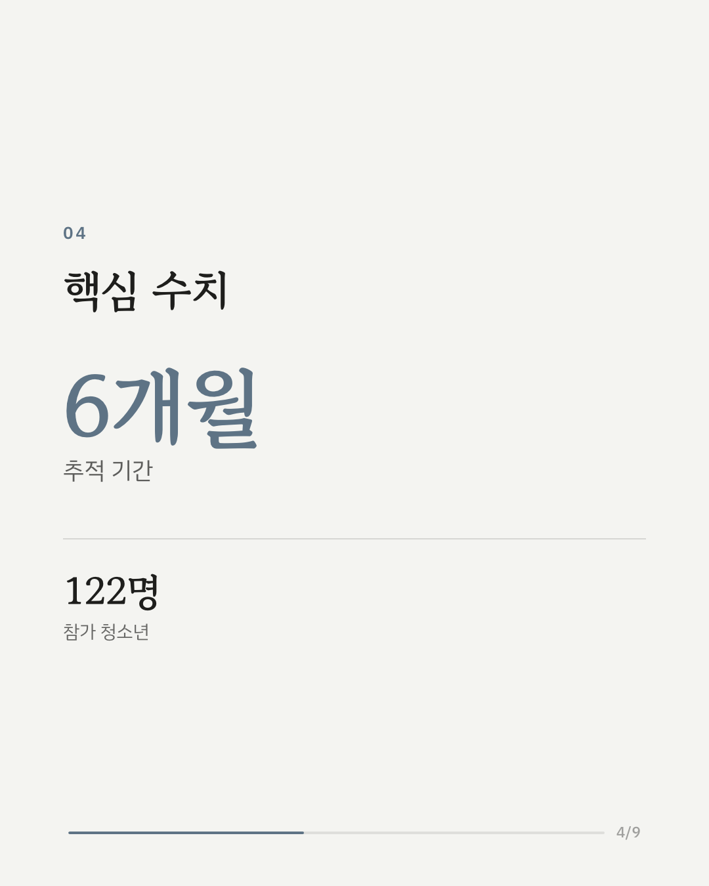
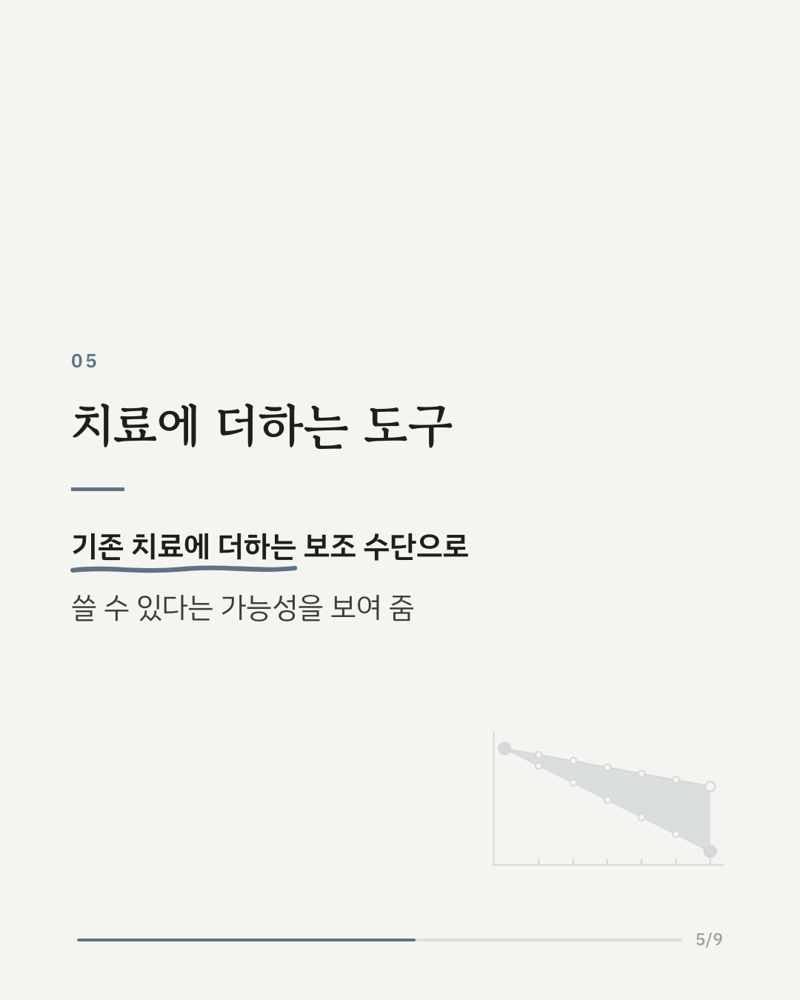
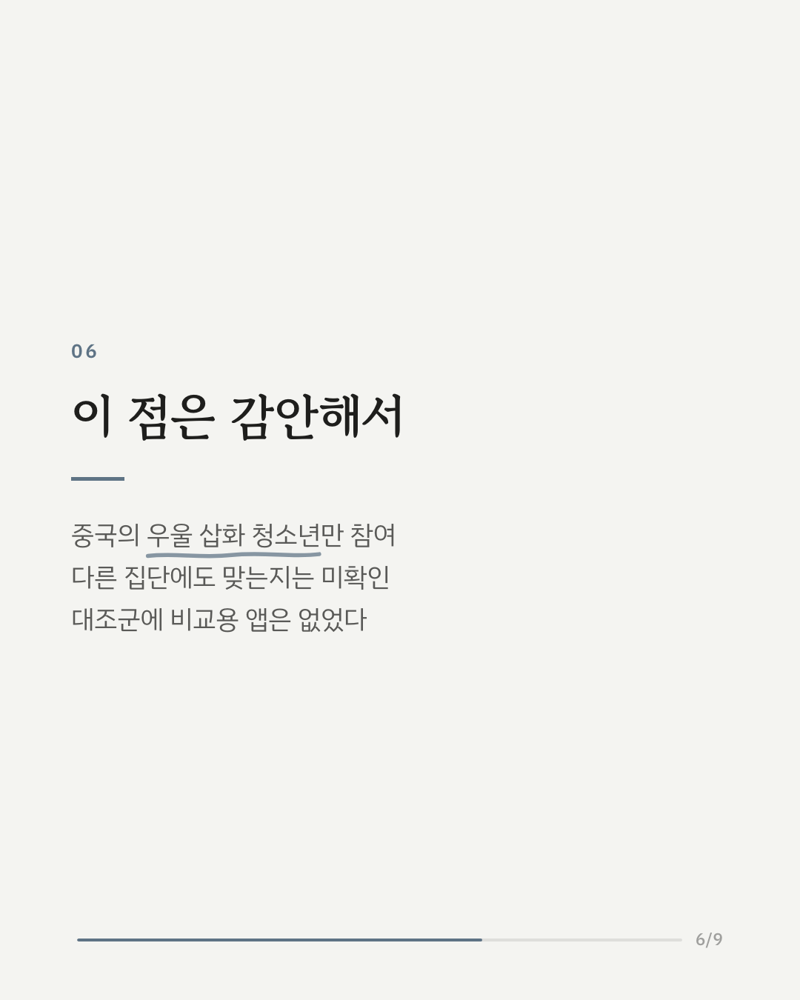
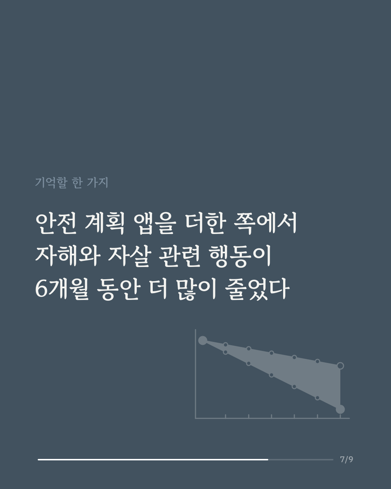
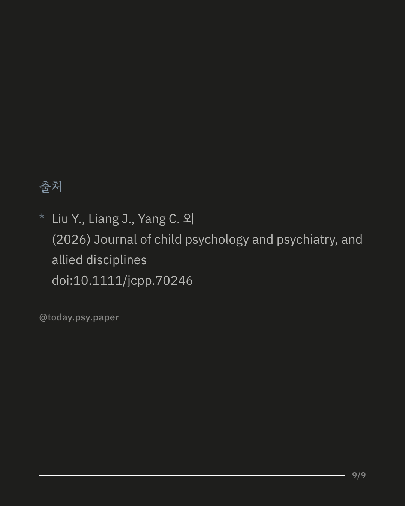

우울증을 겪는 청소년에게 자해와 자살 생각은 함께 나타나는 일이 많습니다. 이럴 때 임상에서는 위기가 왔을 때 할 일과 연락할 사람을 미리 적어 두는 '안전 계획'을 세우는데, 이 연구는 그 안전 계획을 스마트폰 앱으로 옮겼을 때 효과가 있는지 확인했습니다. 중국 연구진은 우울 삽화가 있는 청소년 122명을 무작위로 두 집단으로 나눴습니다. 한쪽은 기존 치료만 받았고, 다른 한쪽은 기존 치료에 안전 계획 앱을 함께 사용했습니다. 이후 1개월, 3개월, 6개월 시점에 자해·자살 생각과 행동, 우울, 불안, 수면의 질을 평가했습니다. 안전 계획 앱을 함께 쓴 집단은 자해 빈도와 자살 관련 행동 빈도가 대조군보다 더 크게 줄었습니다. 우울과 불안의 정도, 수면의 질, 교육 연수를 감안한 뒤에도 차이는 유지됐습니다. 앱을 써 본 청소년들의 만족도도 좋은 편이었습니다. 연구진은 안전 계획 앱이 기존 치료를 보조하는 수단이 될 수 있다고 봤습니다. 다만 참가자가 모두 중국의 우울 삽화 청소년이었고, 대조군은 비교용 앱 없이 기존 치료만 받았습니다. 출처: Journal of Child Psychology and Psychiatry (2026), 'Efficacy and acceptability of digital safety planning therapy for self-injurious thoughts and behaviors in adolescents with depressive episodes: a randomized controlled trial' DOI: 10.1111/jcpp.70246 힘든 마음이 들 때는 자살예방상담전화 109, 정신건강상담전화 1577-0199에서 도움을 받을 수 있습니다. #임상심리 #정신건강정보 #심리학연구 #논문리뷰 #청소년우울증 #청소년정신건강 #안전계획 #디지털치료제
python3 publish.py 42855842